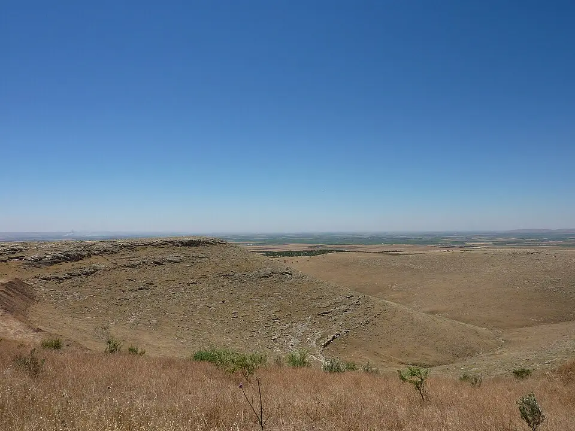
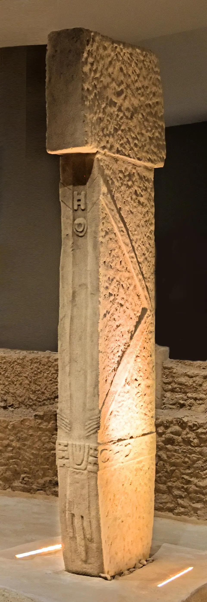
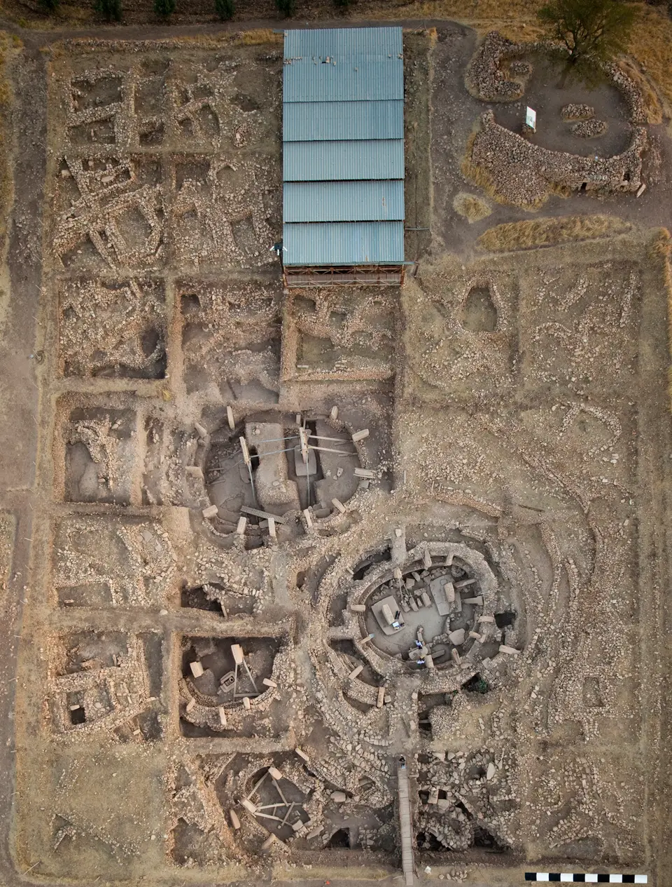

Göbekli Tepe: ngôi đền ra đời trước cả nông nghiệp
Khoảng 9500 TCN, những người còn sống chủ yếu bằng săn bắt hái lượm đã dựng các vòng cột đá chạm hình thú trên một đỉnh đồi ở Thổ Nhĩ Kỳ. Họ chưa biết làm đồ gốm.

Tháng 10 năm 1994, nhà khảo cổ người Đức Klaus Schmidt đi hỏi dân các làng quanh Şanlıurfa xem có ngọn đồi nào nhiều đá lửa không. Một nông dân tên Mahmut Yıldız dẫn ông lên khu đồi của gia đình mình, nơi lưỡi cày hay va phải những phiến đá vôi lớn. Ba mươi năm trước đó, một đoàn khảo sát đã đi qua đây và cho rằng đó là bia mộ. Schmidt nhận ra đó là đỉnh của những cây cột cổ nhất thế giới.
Ngọn đồi "Bụng Phệ"
Göbekli Tepe trong tiếng Thổ Nhĩ Kỳ nghĩa là "đồi bụng phệ". Người Kurd quanh vùng gọi nó là Girê Mirazan, "đồi ước nguyện", và coi đây là nơi linh thiêng từ lâu trước khi giới khảo cổ để ý. Gò đất cao khoảng 15 m, rộng khoảng 8 ha, nằm trên một cao nguyên đá vôi nhìn xuống đồng bằng Harran.
Năm 1963, một đoàn khảo sát của Đại học Istanbul và Đại học Chicago, do Halet Çambel và Robert Braidwood dẫn đầu, đã ghi nhận nơi này. Nhà khảo cổ Mỹ Peter Benedict nhận ra công cụ đá lửa trên mặt đất thuộc thời đồ đá mới, nhưng tưởng các đầu cột là bia mộ. Trong khi đó, nhiều thế hệ nông dân đã nhặt đá dồn thành đống, và có người còn cố đập vỡ vài cây cột vì nghĩ đó chỉ là tảng đá vướng cày. Phải đến khi Schmidt bắt đầu đào, người ta mới biết mình đã cày lên những gì.
Cột chữ T có tay và thắt lưng


Schmidt bắt đầu đào từ năm 1995. Ông tìm thấy những công trình hình tròn, đường kính từ 10 đến 30 m. Quanh tường là các cột đá vôi hình chữ T, ở giữa có hai cột cao hơn đứng đối diện nhau. Đá được đục từ mỏ cách đỉnh đồi khoảng 100 m, bằng dụng cụ đá lửa. Theo số liệu dẫn trên Wikipedia tiếng Việt, những cây cột lớn nhất cao tới khoảng 6 m và nặng tới khoảng 10 tấn.
Trên cột có hình rắn, cáo, lợn rừng, sư tử, linh dương, kền kền, bọ cạp. Các nhà nghiên cứu ghi nhận con vật thường là con đực, ở tư thế hung dữ. Một số cột có cánh tay chạm nổi ở nửa dưới, kèm thắt lưng và khố. Vì vậy, nhiều người cho rằng chính cây cột là một thân người cách điệu, với phiến ngang trên đỉnh là đầu.
Đến nay mới đào được bốn vòng tròn lớn. Khảo sát địa vật lý cho thấy trong gò còn ít nhất 20 công trình như vậy, với gần 200 cây cột. Câu hỏi khó hơn là những vòng tròn ấy có từ bao giờ.
Năm 2000, ông đặt tên cho một bài báo của mình là "Zuerst kam der Tempel, dann die Stadt", tức "Đền thờ có trước, thành phố có sau".
Bằng chứng nói gì


Niên đại phóng xạ carbon cho thấy những công trình cổ nhất được dựng trong khoảng 9500 đến 9000 TCN, và nơi này còn được dùng đến khoảng 8000 TCN. Đây là thời đồ đá mới tiền đồ gốm: người ta chưa làm gốm, và nông nghiệp chỉ mới manh nha.
Phần diễn giải thì đã thay đổi nhiều. Schmidt cho rằng đây là trung tâm nghi lễ, nơi các nhóm săn bắt du mục từ khắp vùng tụ về để xây dựng và mở tiệc, rồi lại tản đi. Năm 2000, ông đặt tên cho một bài báo của mình là "Zuerst kam der Tempel, dann die Stadt", tức "Đền thờ có trước, thành phố có sau". Báo chí gọi Göbekli Tepe là "ngôi đền đầu tiên của thế giới".
Sau khi Schmidt mất năm 2014, nhóm khai quật mới thấy bức tranh khác. Các công bố từ năm 2019 mô tả nhà ở, hệ thống kênh dẫn nước mưa vào các bể đục trong đá chứa được ít nhất 150 m³, và hơn 7.000 cối đá dùng để nghiền ngũ cốc. Chưa rõ ngũ cốc ấy là cây dại hay cây trồng. Giả thuyết cũ rằng người xưa cố ý lấp đầy các vòng tròn cũng bị bỏ; nay người ta cho rằng chúng bị lở đất vùi lấp nhiều lần và được sửa lại. Mục đích thật của các vòng cột vẫn chưa ai xác định được. Ngay cả số người cần để dựng các cột cũng đang bị tính lại.
Bao nhiêu người thì dựng nổi?
Schmidt tính rằng việc đục, chuyển và dựng cột cần hàng trăm người, nên phải có một tầng lớp tôn giáo đủ sức tập hợp họ. Ông dựa vào thí nghiệm của Thor Heyerdahl với tượng moai ở đảo Phục Sinh. Các nhà nghiên cứu khác đưa ra con số nhỏ hơn nhiều: khoảng 7 đến 14 người có thể kéo một cây cột bằng dây thừng, và thí nghiệm tại chỗ cho thấy 12 đến 24 người có thể dựng các công trình giai đoạn sau trong chưa đầy bốn tháng. Tức là một đại gia đình hay một làng là đủ.
Dư âm đến hôm nay
Năm 2018, Göbekli Tepe được UNESCO công nhận là Di sản Thế giới, như "một trong những biểu hiện đầu tiên của kiến trúc đồ sộ do con người làm ra". Cùng năm đó, bà Çiğdem Köksal Schmidt, vợ của Klaus Schmidt, phản đối việc làm lối đi cho du khách vì cho rằng gây hại di chỉ; Bộ Văn hóa Thổ Nhĩ Kỳ phủ nhận. Cách đó khoảng 46 km, di chỉ Karahan Tepe cũng có cột chữ T, và cả vùng nay được nghiên cứu như một cụm khoảng 12 địa điểm gọi chung là Taş Tepeler, "những ngọn đồi đá".
Tính đến năm 2021, mới khoảng 10% di chỉ được khai quật. Göbekli Tepe chắc chắn là một trong những công trình cự thạch cổ nhất từng biết; còn việc nó là đền thờ, nhà hội hay cả hai thì vẫn đang được tranh luận.